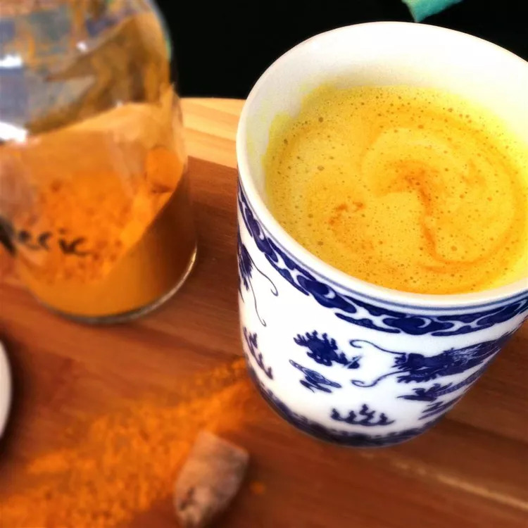

Home
Turmeric Milk

Description
I found many drink recipes calling for milk, turmeric, and ginger root. I sampled different amounts of each ingredient and feel this is a perfect balance between creamy almond milk, spicy ginger, and the earthy taste of turmeric.
Ingredients
- 1 (1 1/2 inch) piece fresh turmeric root, peeled and grated
- 1 (1/2 inch) piece fresh ginger root, peeled and grated
- 1 tablespoon honey
- 1 cup unsweetened almond milk
- 1 pinch ground turmeric
- 1 pinch ground cinnamon
Steps
- Step 1
Combine turmeric root, ginger root, and honey together in a bowl, crushing the turmeric and ginger as much as possible.
- Step 2
Heat almond milk in a saucepan over medium-low heat. Once small bubbles begin to form around the edges, reduce heat to low. Transfer about 2 tablespoon milk to turmeric mixture to allow mixture to soften and honey to melt into a paste-like mixture.
- Step 3
Mix the turmeric paste into milk in the saucepan; raise temperature to medium-low and cook, stirring continuously, until fully combined. Blend with an immersion blender for a smooth texture.
- Step 4
Pour turmeric tea into a mug and top with ground turmeric and cinnamon.